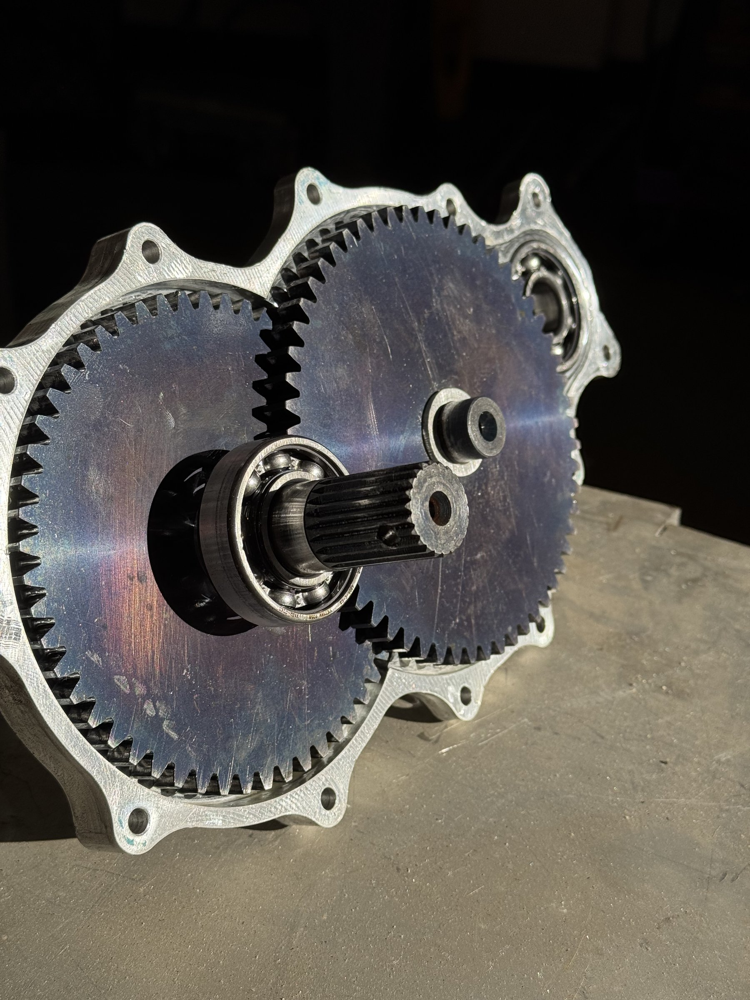
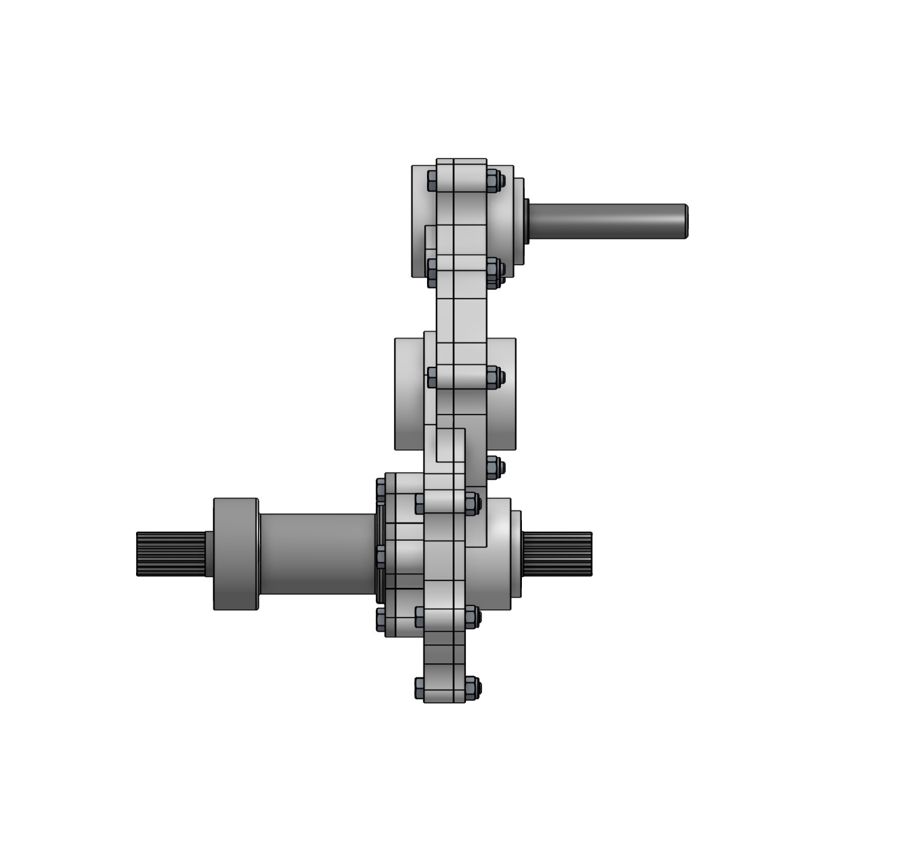
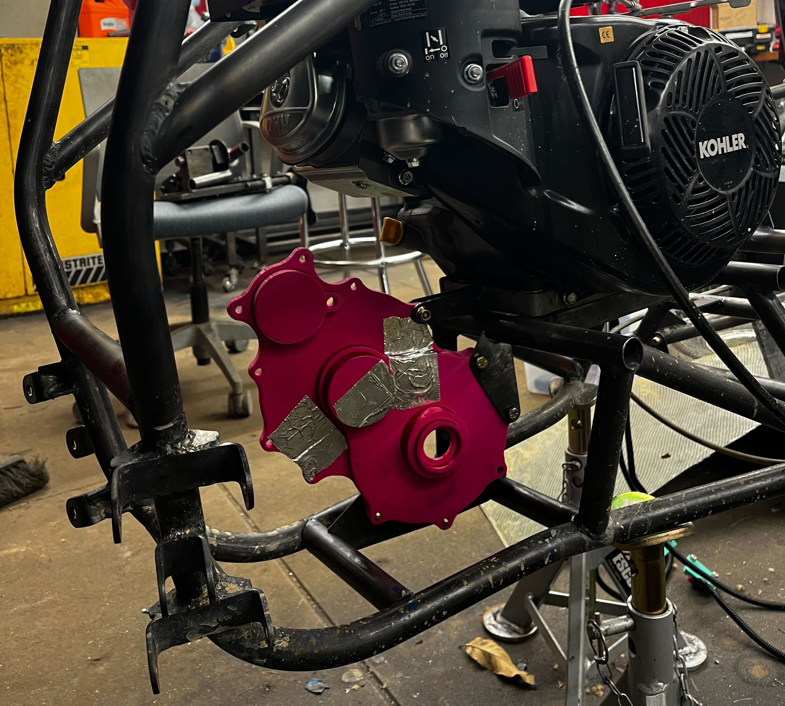
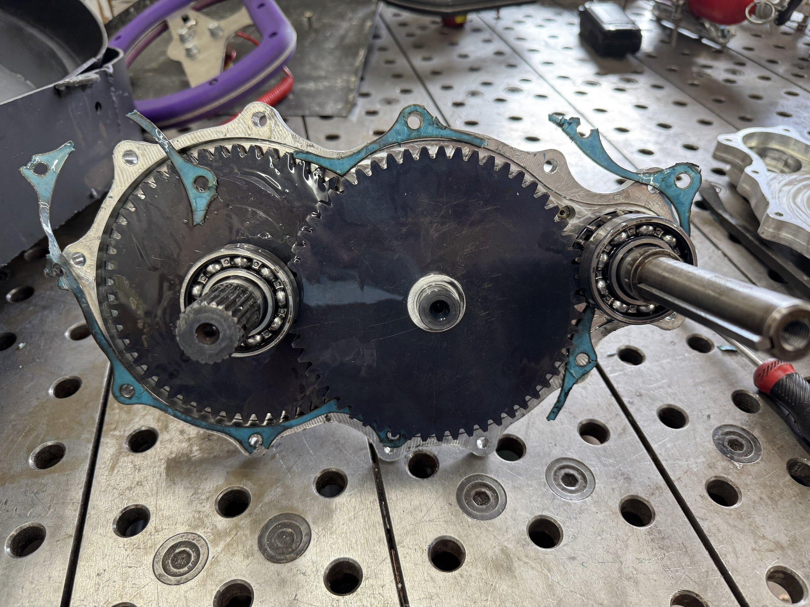

Overview
During our spring testing session, the team had been running a transfer case pulled from a prior-year car. After driving for a few hours, it failed. Later analysis showed it was because the pinion gears were only 15 teeth, too small for the diametral pitch, giving a Lewis factor of safety of about 0.4. I stepped in and made an iteration to the design, replacing the problematic 15-tooth gears with 19-tooth gears. I also increased the hardness from HRC 40 to HRC 50. This led to the new design having a FoS of 0.865 at the theoretical worst-case load; engine at max torque, cvt at lowest ratio, and wheels not spinning. We have never seen the car reach this in operation.
Background
Baja SAE is a collegiate off-road racing competition run by SAE International. Teams design and build a single-seat off-road vehicle around a spec engine, a single cylinder making about 10 hp, and compete in events from a drag race style acceleration run to a 4-hour endurance race. This year, Stevens competes as car #89.
The drivetrain layout is engine, CVT, gearbox, rear axle. I moved into Powertrain Lead at the end of March 2026.
Failure Analysis
The transfer case failed through complete gear tooth fracture on the intermediate shaft. This was a fast-fracture failure: the material was loaded past its ultimate strength in a single event rather than fatiguing gradually. Teardown identified two contributing factors.
The pinion gears in that unit were 15 teeth, well below the 19-tooth pinions in the redesign. At the same diametral pitch (10), a smaller tooth count raises bending stress in two ways. First, the pitch radius is smaller, so the same torque produces a larger tangential force on each tooth. Second, fewer teeth means a lower Lewis form factor Y, indicating higher stress concentration at the tooth root. Both effects push stress in the same direction and they multiply.
19T pinion: r = 19/20 = 0.950 in, Y = 0.314
σ = (Wt × P) / (F × Y)
Stress ratio (same torque): σ15T / σ19T = (r19 × Y19) / (r15 × Y15) = (0.950 × 0.314) / (0.750 × 0.276) = 0.2983 / 0.2070 = 1.44
A 15-tooth pinion at DP 10 sees about 44% higher bending stress than a 19-tooth pinion carrying the same torque.
The transfer case gears were also heat treated to approximately HRC 40 and had been sitting in storage for months before installation. Lewis analysis gives a factor of safety of about 0.4 under the worst-case static load. Increasing this to HRC 50 allowed us to get closer to a worst case factor of safety of 1.


Design Approach
The 55-tooth and 57-tooth driven gears had already been ordered and manufactured. Working from that constraint, I chose 19-tooth pinions. Beyond fixing the FoS, the larger pinion also produces a more favorable speed ratio. The car had consistently struggled to reach competitive top speeds, and the 19-tooth mesh reduces the overall gear reduction compared to the 15-tooth setup.
Before committing to machining, I built a full CAD assembly and imported bearing and shaft seal models from McMaster-Carr to verify fit and clearances. Getting everything checked at the assembly level meant no surprises during manufacturing.
One key step was deriving center distances directly from the gear geometry rather than relying on inherited values. Instead of blindly trusting built in CAD gear tools, I verified the center to center using diametrical pitch calculations below:
Stage 1 (19T → 57T): C₁ = (19 + 57) / (2 × 10) = 3.800 in
Stage 2 (19T → 55T): C₂ = (19 + 55) / (2 × 10) = 3.700 in
These values set the bearing bore locations in the housing model. Getting center distance wrong would be the end of this gearbox. Too tight would cause interference and elevated contact stress and too loose creates excessive backlash and impact loads each time a tooth pair comes into mesh.
Drivetrain Load Analysis
Before sizing any gear, I traced the torque path from the engine to the axle under the worst-case condition: engine at peak torque, CVT at its most torque-biased ratio, wheels completely stationary. This is the highest load that can appear at any mesh point.
| Stage | Ratio | Torque In | Torque Out |
|---|---|---|---|
| CVT (Comet-790) | 3.38:1 | 18.5 ft·lb | 62.5 ft·lb |
| Stage 1 (19T → 57T) | 3.00:1 | 62.5 ft·lb | 187.5 ft·lb |
| Stage 2 (19T → 55T) | 2.89:1 | 187.5 ft·lb | ~542 ft·lb |
Total gearbox reduction: 3.0 × 2.89 = 8.68:1. Total drivetrain at peak CVT ratio: 3.38 × 8.68 = about 29.3:1. The Stage 2 input pinion carries the highest tangential force in the system. It sits on the intermediate shaft after the 3:1 Stage 1 multiplication, so its load is 9 times engine torque.
Gear Stress Analysis
The Lewis equation treats a gear tooth as a cantilever beam loaded at the tip. It is a standard conservative model for bending stress at the tooth root:
σ = root bending stress (psi) · Wt = tangential force (lb) · P = diametral pitch · F = face width (in) · Y = Lewis form factor
All gears: diametral pitch 10, face width 0.375 in, 20° full-depth involute. Y = 0.314 for 19 teeth at 20° from the standard Lewis table. Worst-case load at the Stage 2 pinion under full stall:
rpinion = 19 / (2 × 10) = 0.950 in
Wt = 2,251 / 0.950 = 2,369.6 lb
σ = (2,369.6 × 10) / (0.375 × 0.314) = 201,236 psi
Allowable bending stress at HRC 50: 174,045 psi
Lewis FoS = 174,045 / 201,236 = 0.865
The FoS of 0.865 is against the theoretical maximum load: full drivetrain stall with the engine at peak torque and the CVT locked at its lowest ratio. This condition is never sustained in operation. The CVT begins to upshift before stall, tire slip limits torque transfer, and the engine unloads before reaching peak torque at stall RPM. The Lewis equation is also conservative by design, assuming full load at a single tooth tip and ignores load sharing between adjacent teeth.
15T pinions, HRC 40
19T pinions, HRC 50
| Parameter | Old Transfer Case | New Design |
|---|---|---|
| Pinion tooth count | 15T | 19T |
| Driven gear (Stage 1) | 53T | 57T |
| Pinion pitch radius | 0.750 in | 0.950 in |
| Lewis form factor Y | 0.276 | 0.314 |
| Heat treatment | ~HRC 40, months in storage | HRC 50 |
| Allowable bending stress | ~130,000 psi | 174,045 psi |
| Lewis FoS at stall | ~0.40 (failed at testing) | 0.865 |
| Oil seal | RTV silicone (leaked) | Laser-cut Buna-N gasket |
| Outcome | Tooth fracture at testing | No failures during on campus testing |

Materials
| Housing | 6061-T6 aluminum. The housing carries bearing loads and maintains shaft alignment. 6061 machines easily and is strong enough for the structural loads. It was machined on our Fanuc CNC mill. |
| Gears | 4140 chromoly steel, HRC 50. 4140 through-hardens at these section sizes and stays tough at high hardness. Specifying HRC 50 rather than the HRC 40 of the old transfer case moved the allowable bending stress from about 130,000 psi to 174,045 psi. |
| Bearings | Deep groove ball bearings at each of the six shaft locations, sized for the combined radial and thrust loads at each position. |
| Gasket | Laser-cut Buna-N nitrile rubber. See oil seal section below. |
CAD
The gearbox was fully modeled before any machining began. This allowed for us to avoid any problems with clearances and it went through a full design review process. All of the shelf parts were imported into CAD to allow for exact fitment.



Prototyping
Before milling the aluminum housing, I 3D-printed half of the housing shell to check mounting fit on the car's frame. My goal was to see if the geometry in CAD aligned with the real frame of the car. After a few adjustments to the tabs, I found ones that fit.


Machining
I handled all design and CAD work but due to the timeline, parts of the manufacturing were delegated to other team members.
The transfer case halves were machined on the team's Fanuc CNC mill. I helped run the machine for one operation but didn't write the CAM. The case required two operations, and to set up the second, I made a fixture plate on the Bridgeport manual mill to hold the case at the correct reference position. The second image below shows one half after the first operation, before that second setup.
The bearing carrier was turned on the CNC lathe, which I ran. The first image below shows it mid-operation. Both 19-tooth pinion gears, the input shaft pinion and the intermediate shaft pinion, I cut on the Bridgeport mill. The two large driven gears, the 57-tooth and 55-tooth, were outsourced to an external shop specializing in gear manufacturing earlier in the year.
Assembly required press fits throughout. Gears were pressed onto shafts that had polygonal profiles cut into them for torque transfer. The polygon interface distributes torque through form contact across the shaft cross-section rather than concentrating it at a single keyway.
We had one quality issue came up during manufacturing the input shaft. When we sent it out for heat treatment, it came back at HRC 17 instead of the specified HRC 50. We looked into it and discovered that material was mislabel and it led to it being cut out of 1018 steel. A replacement was made from 4140 and sent for heat treatment. The 1018 shaft was run during campus testing while the correct part was being processed, then swapped out before competition.


Fixing the Oil Leak
Every previous Stevens gearbox used RTV silicone applied as a bead around the mating housing faces. RTV degrades with thermal cycling, and compression depends on how carefully it was applied that day. We have struggled with getting a consistent seal from a hand-applied bead, which has led to every gearbox leaking oil.
I wanted to try and fix this so I researched types of gaskets we could use. I laned on using a Buna-N nitrile rubber gasket laser-cut from the same CAD file that defined the housing mating face so everything would line up. From my research, I found that nitrile is a standard for oil seals and is almost exactly what we need for our application. The gearbox after assembly was left in a clean oil pan with shop towels to check for leaks overnight. It was dry the next day and we will see how it holds up during competition.

Results
The gearbox ran through a full campus testing season without mechanical failure, oil leaks, or any sign of tooth distress. It also set a new speed record for our team of 25 mph.
Testing included full-throttle acceleration runs and braking at speed on campus.
After the testing season we disassembled the gearbox to check gear condition. The photo below shows the housing opened on the welding table. During disassembly, the gasket broke apart, so we laser-cut a replacement from the same CAD file.

Car #89 is entered in Baja SAE competition, June 10–14, 2026.